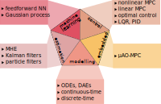

HILO-MPC Documentation¶
HILO-MPC is a toolbox for easy, flexible and fast development of machine-learning-supported optimal control and estimation problems.
This tool can leverage Tensorflow and PyTorch to create machine learning models, and the CasADi framework to efficiently build control and estimation problems.
At the moment HILO-MPC supports:
Control
Nonlinear and linear model predictive control
Model predictive control for path following
Model predictive control for trajectory tracking
PID controller and linear quadratic regulator
Machine Learning
Artificial neural networks
Gaussian processes
Estimation
Moving horizon estimation
Kalman filter (including nonlinear extensions)
Particle filter
Modeling
Ordinary differential equations
Differential algebraic equations
Embedded
\(\mu\text{AO-MPC}\) (code generation software for linear model predictive control)
On the pipeline we have:
Control
Mixed-integer linear model predictive control (work in progress)
Tube model predictive control (work in progress)
Multi-mode model predictive control
Machine Learning
Recurrent neural networks
Physics-informed training of neural networks
Reinforcement learning
Estimation
Multi-rate moving horizon estimation
Embedded
SAM (solver for Al’brekht’s method)